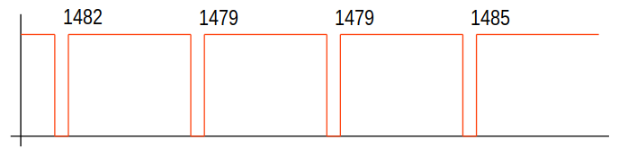

risorse | emond su raspberry pi 4
Alcune considerazioni riguardanti la messa in opera di emond su una Raspberry Pi Mod. 4.
Una brevissima annotazione circa Emoncms: la versione per Raspberry Pi Mod. 4 manca della possibilità di arrestare o riavviare la scheda, funzionalità molto utile e disponibile nella versione per Raspberry Pi Mod. 3B (cfr. emoncms: no shutdown button).
L'ultima versione ufficiale della libreria WiringPi non funziona correttamente sulla scheda Raspberry Pi Mod. 4. La cosa è nota, tanto che l'autore aveva rilasciato una nuova versione pacchettizzata (cfr. wiringPi updated to 2.52 for the Raspberry Pi 4B) ma, a causa di alcune polemiche nate in conseguenza di questa scelta (rilasciare subito la libreria in forma binaria rimandando la pubblicazione del codice sorgente), l'autore ha infine deciso di abbandonare lo sviluppo di questo progetto (cfr. wiringPi – deprecated…).
Vari sono i problemi segnalati, in particolare sulla corretta temporizzazione della GPIO e sulla configurazione di default dei resistori di pull-up e pull-down (cfr. ad esempio Setting Pull Up/Pull Down mode doesn't work (mostly)). Qualcuno è già al lavoro per risolvere questi problemi, come testimoniano per esempio le patch Keeping compatibility of hardware clock of Pi 4 with earlier versions e Fix for pullup/down function for Pi 4.
Stando a quanto riportato in Pi 4 and Gpio Issues e soprattutto nella sezione della documentazione ufficiale dedicata al chip BCM2835 (in particolare l'elenco a pag. 84) sembrava si potesse trattare di un'errata selezione dei resistori di pull-up da parte di emond, ma a posteriori questa ipotesi si è rivelata falsa.
Il passo risolutivo è stato quello di installare una versione non ufficiale della libreria, in particolare la versione 2.60 scaricabile da questo respository git.
L'installazione della versione non ufficiale della libreria WiringPi ha permesso a emond di riconoscere gli impulsi generati dal contatore di energia e di inviare a Emoncms i dati di potenza come atteso. Consultando il syslog si nota tuttavia la presenza di un considerevole numero di errori di tipo “Detected starting pulse out of sequence” e “Detected ending pulse out of sequence”, e più raramente errori di tipo “Detected invalid pulse”.
Analizzando il codice sorgente di emond si giunge alla conclusione che gli errori più frequenti sono probabilmente causati da impulsi con fronti di salita/discesa particolarmente rumorosi. Il programma infatti registra un interrupt-handler in corrispondenza del rilevamento di un fronte sul pin della GPIO al quale è connesso il contatore; quando l'elettronica registra una variazione del livello elettrico del terminale, emond attiva la seguente procedura (in pseudo-codice):
NOTA: il segnale generato dal contatore di energia è normalmente alto, per tale motivo l'inizio di un impulso è associato a un fronte di discesa, mentre il suo termine a uno di salita (vedere più avanti le forme d'onda catturate dall'oscilloscopio per una conferma).
SE FRONTE_DI_DISCESA
SE IMPULSO_INIZIATO
SEGNALA_ERRORE "Detected starting pulse"
ALTRIMENTI
SEGNA IMPULSO_INIZIATO
AVVIA CRONOMETRO
SE FRONTE_DI_SALITA
SE IMPULSO_INIZIATO
SEGNA IMPULSO_FINITO
FERMA CRONOMETRO
DETERMINA LUNGHEZZA_IMPULSO
SE LUNGHEZZA_IMPULSO FUORI TOLLERANZA
SEGNALA_ERRORE "Detected invalid pulse"
ALTRIMENTI
DETERMINA POTENZA_CONSUMATA
INVIA POTENZA_CONSUMATA A EMONCMS
ALTRIMENTI
SEGNALA_ERRORE "Detected ending pulse"
L'errore “Detected starting pulse out of sequence” indica quindi che sono stati registrati due fronti di discesa consecutivi, mentre “Detected ending pulse out of sequence” segnala che sono stati rilevati due fronti di salita in successione. Queste condizioni possono invero verificarsi se il segnale impulsivo è affetto da rumore. La perfetta forma del segnale generato dal contatore di energia suggerisce tuttavia di ricercare altrove la causa di questo tipo di errori:
Segnale del contatore alla scala temporale di 1s.
Il segnale è stato acquisito sul pin di ingresso della porta GPIO della scheda Raspberry Pi Mod. 4 collegato al terminale SO+ del contatore di energia da 1000imp/kWh. Il carico di prova era costituito da una stufetta da 1kW. Il periodo del segnale è molto prossimo a quello atteso, pari a 3.6s (1000 impulsi/h ⇒ f = 0.28Hz). I fronti dell'impulso appaiono quasi verticali.
Dettaglio di un impulso (durata nominale=90ms). I fronti non presentano distorsioni.
Non avendo mezzi per determinare la causa alla base di queste segnalazioni spurie (il chip che gestisce la GPIO? ancora WiringPi? altro?), posto che la loro presenza non compromette il buon funzionamento dell'intero sistema, si è deciso di ignorarle — non dimenticando tuttavia che sulla scheda Raspberry Pi Mod. 3 queste incongruenze non si presentano.
Dopo alcune ore di funzionamento continuato del sistema di monitoraggio della pompa di calore, la curva della potenza assorbita appariva così in Emoncms:
La curva di potenza inaspettata.
Quello in figura non è il comportamento atteso di una pompa di calore, deve trattarsi per forza di un malfunzionamento del sistema emond/Emoncms. A cosa possono essere dovute quelle cadute di potenza inattese? L'analisi ha avuto inizio dai dati registrati da Emoncms:
26/02/2020 19.12.56 1277 26/02/2020 19.13.18 1277 26/02/2020 19.13.41 1279 26/02/2020 19.14.03 1279 26/02/2020 19.14.26 1277 26/02/2020 19.14.48 638 26/02/2020 19.15.11 1277 26/02/2020 19.15.33 1277 26/02/2020 19.15.56 1283 26/02/2020 19.16.18 1281 26/02/2020 19.16.44 640 26/02/2020 19.17.06 1281 26/02/2020 19.17.29 1281 26/02/2020 19.17.51 1283 26/02/2020 19.18.13 1282 26/02/2020 19.18.36 1279 26/02/2020 19.18.58 1279 26/02/2020 19.19.21 1281 26/02/2020 19.19.43 1283
Frammento di file CSV con alcune cadute di potenza.
Salta subito agli occhi che i valori in corrispondenza alle cadute di potenza sono circa la metà di quelli attesi. Il syslog riporta qualche evento degno di nota negli stessi istanti?
... Feb 26 20:12:05 emonpi emon-pwr1[407]: Detected ending pulse out of sequence Feb 26 20:12:08 emonpi emon-pwr1[407]: Detected starting pulse out of sequence Feb 26 20:12:08 emonpi emon-pwr1[407]: Detected ending pulse out of sequence Feb 26 20:12:08 emonpi emon-pwr1[407]: Detected ending pulse out of sequence Feb 26 20:12:11 emonpi emon-pwr1[407]: Detected ending pulse out of sequence Feb 26 20:12:13 emonpi emon-pwr1[407]: Detected ending pulse out of sequence Feb 26 20:12:13 emonpi emon-pwr1[407]: Detected ending pulse out of sequence Feb 26 20:12:16 emonpi emon-pwr1[407]: Detected ending pulse out of sequence Feb 26 20:12:19 emonpi emon-pwr1[407]: Detected starting pulse out of sequence Feb 26 20:12:19 emonpi emon-pwr1[407]: Detected invalid pulse (length=92 ms) Feb 26 20:12:22 emonpi emon-pwr1[407]: Detected ending pulse out of sequence Feb 26 20:12:22 emonpi emon-pwr1[407]: Detected ending pulse out of sequence Feb 26 20:12:25 emonpi emon-pwr1[407]: Detected ending pulse out of sequence Feb 26 20:12:28 emonpi emon-pwr1[407]: Detected ending pulse out of sequence Feb 26 20:12:33 emonpi emon-pwr1[407]: Detected ending pulse out of sequence Feb 26 20:12:36 emonpi emon-pwr1[407]: Detected ending pulse out of sequence Feb 26 20:12:39 emonpi emon-pwr1[407]: Detected ending pulse out of sequence Feb 26 20:12:39 emonpi emon-pwr1[407]: Detected ending pulse out of sequence Feb 26 20:12:44 emonpi emon-pwr1[407]: Detected ending pulse out of sequence Feb 26 20:12:47 emonpi emon-pwr1[407]: Detected ending pulse out of sequence Feb 26 20:12:47 emonpi emon-pwr1[407]: Detected ending pulse out of sequence Feb 26 20:12:50 emonpi emon-pwr1[407]: Detected ending pulse out of sequence Feb 26 20:12:53 emonpi emon-pwr1[407]: Detected ending pulse out of sequence Feb 26 20:12:59 emonpi emon-pwr1[407]: Detected ending pulse out of sequence Feb 26 20:13:01 emonpi emon-pwr1[407]: Detected ending pulse out of sequence Feb 26 20:13:01 emonpi emon-pwr1[407]: Detected ending pulse out of sequence Feb 26 20:13:04 emonpi emon-pwr1[407]: Detected ending pulse out of sequence Feb 26 20:13:10 emonpi emon-pwr1[407]: Detected ending pulse out of sequence Feb 26 20:13:10 emonpi emon-pwr1[407]: Detected ending pulse out of sequence Feb 26 20:13:13 emonpi emon-pwr1[407]: Detected ending pulse out of sequence Feb 26 20:13:15 emonpi emon-pwr1[407]: Detected ending pulse out of sequence Feb 26 20:13:15 emonpi emon-pwr1[407]: Detected ending pulse out of sequence Feb 26 20:13:18 emonpi emon-pwr1[407]: Detected ending pulse out of sequence Feb 26 20:13:21 emonpi emon-pwr1[407]: Detected ending pulse out of sequence Feb 26 20:13:21 emonpi emon-pwr1[407]: Detected ending pulse out of sequence Feb 26 20:13:24 emonpi emon-pwr1[407]: Detected ending pulse out of sequence Feb 26 20:13:27 emonpi emon-pwr1[407]: Detected ending pulse out of sequence Feb 26 20:13:30 emonpi emon-pwr1[407]: Detected ending pulse out of sequence Feb 26 20:13:30 emonpi emon-pwr1[407]: Detected ending pulse out of sequence Feb 26 20:13:32 emonpi emon-pwr1[407]: Detected ending pulse out of sequence Feb 26 20:13:32 emonpi emon-pwr1[407]: Detected ending pulse out of sequence Feb 26 20:13:35 emonpi emon-pwr1[407]: Detected ending pulse out of sequence Feb 26 20:13:35 emonpi emon-pwr1[407]: Detected ending pulse out of sequence Feb 26 20:13:38 emonpi emon-pwr1[407]: Detected ending pulse out of sequence Feb 26 20:13:41 emonpi emon-pwr1[407]: Detected ending pulse out of sequence Feb 26 20:13:44 emonpi emon-pwr1[407]: Detected ending pulse out of sequence Feb 26 20:13:46 emonpi emon-pwr1[407]: Detected ending pulse out of sequence Feb 26 20:13:46 emonpi emon-pwr1[407]: Detected ending pulse out of sequence Feb 26 20:13:49 emonpi emon-pwr1[407]: Detected ending pulse out of sequence Feb 26 20:13:49 emonpi emon-pwr1[407]: Detected ending pulse out of sequence Feb 26 20:13:55 emonpi emon-pwr1[407]: Detected ending pulse out of sequence Feb 26 20:13:58 emonpi emon-pwr1[407]: Detected ending pulse out of sequence Feb 26 20:14:03 emonpi emon-pwr1[407]: Detected ending pulse out of sequence Feb 26 20:14:06 emonpi emon-pwr1[407]: Detected ending pulse out of sequence Feb 26 20:14:09 emonpi emon-pwr1[407]: Detected starting pulse out of sequence Feb 26 20:14:09 emonpi emon-pwr1[407]: Detected ending pulse out of sequence Feb 26 20:14:12 emonpi emon-pwr1[407]: Detected starting pulse out of sequence Feb 26 20:14:15 emonpi emon-pwr1[407]: Detected ending pulse out of sequence Feb 26 20:14:17 emonpi emon-pwr1[407]: Detected starting pulse out of sequence Feb 26 20:14:20 emonpi emon-pwr1[407]: Detected ending pulse out of sequence Feb 26 20:14:23 emonpi emon-pwr1[407]: Detected ending pulse out of sequence Feb 26 20:14:23 emonpi emon-pwr1[407]: Detected ending pulse out of sequence Feb 26 20:14:26 emonpi emon-pwr1[407]: Detected ending pulse out of sequence Feb 26 20:14:31 emonpi emon-pwr1[407]: Detected ending pulse out of sequence Feb 26 20:14:34 emonpi emon-pwr1[407]: Detected ending pulse out of sequence Feb 26 20:14:46 emonpi emon-pwr1[407]: Detected starting pulse out of sequence Feb 26 20:14:46 emonpi emon-pwr1[407]: Detected invalid pulse (length=94 ms) Feb 26 20:14:48 emonpi emon-pwr1[407]: Detected ending pulse out of sequence Feb 26 20:14:54 emonpi emon-pwr1[407]: Detected ending pulse out of sequence Feb 26 20:14:54 emonpi emon-pwr1[407]: Detected ending pulse out of sequence Feb 26 20:14:57 emonpi emon-pwr1[407]: Detected ending pulse out of sequence Feb 26 20:15:00 emonpi emon-pwr1[407]: Detected ending pulse out of sequence Feb 26 20:15:00 emonpi emon-pwr1[407]: Detected ending pulse out of sequence Feb 26 20:15:01 emonpi CRON[13938]: (root) CMD (/usr/local/bin/wifi-check > /var/log/emoncms/wificheck.log 2>&1) Feb 26 20:15:05 emonpi emon-pwr1[407]: Detected ending pulse out of sequence Feb 26 20:15:05 emonpi emon-pwr1[407]: Detected ending pulse out of sequence Feb 26 20:15:08 emonpi emon-pwr1[407]: Detected ending pulse out of sequence Feb 26 20:15:11 emonpi emon-pwr1[407]: Detected ending pulse out of sequence Feb 26 20:15:14 emonpi emon-pwr1[407]: Detected ending pulse out of sequence Feb 26 20:15:22 emonpi emon-pwr1[407]: Detected ending pulse out of sequence Feb 26 20:15:22 emonpi emon-pwr1[407]: Detected ending pulse out of sequence Feb 26 20:15:28 emonpi emon-pwr1[407]: Detected ending pulse out of sequence Feb 26 20:15:31 emonpi emon-pwr1[407]: Detected ending pulse out of sequence Feb 26 20:15:31 emonpi emon-pwr1[407]: Detected ending pulse out of sequence Feb 26 20:15:33 emonpi emon-pwr1[407]: Detected ending pulse out of sequence Feb 26 20:15:39 emonpi emon-pwr1[407]: Detected ending pulse out of sequence Feb 26 20:15:42 emonpi emon-pwr1[407]: Detected ending pulse out of sequence Feb 26 20:15:45 emonpi emon-pwr1[407]: Detected ending pulse out of sequence Feb 26 20:15:50 emonpi emon-pwr1[407]: Detected ending pulse out of sequence Feb 26 20:15:53 emonpi emon-pwr1[407]: Detected ending pulse out of sequence Feb 26 20:15:53 emonpi emon-pwr1[407]: Detected ending pulse out of sequence Feb 26 20:15:56 emonpi emon-pwr1[407]: Detected ending pulse out of sequence Feb 26 20:15:59 emonpi emon-pwr1[407]: Detected starting pulse out of sequence Feb 26 20:15:59 emonpi emon-pwr1[407]: Detected invalid pulse (length=92 ms) Feb 26 20:16:01 emonpi emon-pwr1[407]: Detected ending pulse out of sequence Feb 26 20:16:01 emonpi emon-pwr1[407]: Detected ending pulse out of sequence Feb 26 20:16:04 emonpi emon-pwr1[407]: Detected ending pulse out of sequence Feb 26 20:16:04 emonpi emon-pwr1[407]: Detected ending pulse out of sequence Feb 26 20:16:07 emonpi emon-pwr1[407]: Detected ending pulse out of sequence Feb 26 20:16:13 emonpi emon-pwr1[407]: Detected ending pulse out of sequence Feb 26 20:16:16 emonpi emon-pwr1[407]: Detected ending pulse out of sequence Feb 26 20:16:16 emonpi emon-pwr1[407]: Detected ending pulse out of sequence Feb 26 20:16:18 emonpi emon-pwr1[407]: Detected ending pulse out of sequence Feb 26 20:16:18 emonpi emon-pwr1[407]: Detected ending pulse out of sequence Feb 26 20:16:21 emonpi emon-pwr1[407]: Detected ending pulse out of sequence Feb 26 20:16:24 emonpi emon-pwr1[407]: Detected ending pulse out of sequence Feb 26 20:16:24 emonpi emon-pwr1[407]: Detected ending pulse out of sequence Feb 26 20:16:27 emonpi emon-pwr1[407]: Detected ending pulse out of sequence Feb 26 20:16:30 emonpi emon-pwr1[407]: Detected starting pulse out of sequence Feb 26 20:16:30 emonpi emon-pwr1[407]: Detected invalid pulse (length=93 ms) Feb 26 20:16:35 emonpi emon-pwr1[407]: Detected ending pulse out of sequence Feb 26 20:16:38 emonpi emon-pwr1[407]: Detected ending pulse out of sequence Feb 26 20:16:38 emonpi emon-pwr1[407]: Detected ending pulse out of sequence Feb 26 20:16:41 emonpi emon-pwr1[407]: Detected starting pulse out of sequence Feb 26 20:16:41 emonpi emon-pwr1[407]: Detected invalid pulse (length=93 ms) Feb 26 20:16:44 emonpi emon-pwr1[407]: Detected ending pulse out of sequence Feb 26 20:16:46 emonpi emon-pwr1[407]: Detected ending pulse out of sequence Feb 26 20:16:52 emonpi emon-pwr1[407]: Detected ending pulse out of sequence Feb 26 20:16:52 emonpi emon-pwr1[407]: Detected ending pulse out of sequence Feb 26 20:16:55 emonpi emon-pwr1[407]: Detected ending pulse out of sequence Feb 26 20:16:55 emonpi emon-pwr1[407]: Detected ending pulse out of sequence Feb 26 20:16:58 emonpi emon-pwr1[407]: Detected ending pulse out of sequence Feb 26 20:16:58 emonpi emon-pwr1[407]: Detected ending pulse out of sequence Feb 26 20:17:00 emonpi emon-pwr1[407]: Detected ending pulse out of sequence Feb 26 20:17:01 emonpi CRON[14105]: (root) CMD ( cd / && run-parts --report /etc/cron.hourly) Feb 26 20:17:01 emonpi systemd[1]: Reloading Log2Ram. Feb 26 20:17:01 emonpi log2ram[14115]: sending incremental file list Feb 26 20:17:01 emonpi log2ram[14115]: auth.log Feb 26 20:17:01 emonpi log2ram[14115]: daemon.log Feb 26 20:17:01 emonpi log2ram[14115]: log2ram.log Feb 26 20:17:01 emonpi log2ram[14115]: syslog Feb 26 20:17:01 emonpi log2ram[14115]: emoncms/wificheck.log Feb 26 20:17:01 emonpi log2ram[14115]: logrotate/ Feb 26 20:17:01 emonpi log2ram[14115]: logrotate/logrotate.log Feb 26 20:17:01 emonpi log2ram[14115]: logrotate/logrotate.status Feb 26 20:17:01 emonpi log2ram[14115]: sent 237,253 bytes received 10,373 bytes 495,252.00 bytes/sec Feb 26 20:17:01 emonpi log2ram[14115]: total size is 2,927,018 speedup is 11.82 Feb 26 20:17:01 emonpi systemd[1]: Reloaded Log2Ram. Feb 26 20:17:09 emonpi emon-pwr1[407]: Detected ending pulse out of sequence Feb 26 20:17:14 emonpi emon-pwr1[407]: Detected ending pulse out of sequence Feb 26 20:17:23 emonpi emon-pwr1[407]: Detected ending pulse out of sequence Feb 26 20:17:26 emonpi emon-pwr1[407]: Detected ending pulse out of sequence Feb 26 20:17:26 emonpi emon-pwr1[407]: Detected ending pulse out of sequence Feb 26 20:17:29 emonpi emon-pwr1[407]: Detected ending pulse out of sequence Feb 26 20:17:34 emonpi emon-pwr1[407]: Detected ending pulse out of sequence Feb 26 20:17:37 emonpi emon-pwr1[407]: Detected ending pulse out of sequence Feb 26 20:17:37 emonpi emon-pwr1[407]: Detected ending pulse out of sequence Feb 26 20:17:40 emonpi emon-pwr1[407]: Detected starting pulse out of sequence Feb 26 20:17:40 emonpi emon-pwr1[407]: Detected invalid pulse (length=92 ms) Feb 26 20:17:43 emonpi emon-pwr1[407]: Detected ending pulse out of sequence Feb 26 20:17:43 emonpi emon-pwr1[407]: Detected ending pulse out of sequence Feb 26 20:17:48 emonpi emon-pwr1[407]: Detected ending pulse out of sequence Feb 26 20:17:54 emonpi emon-pwr1[407]: Detected ending pulse out of sequence Feb 26 20:17:57 emonpi emon-pwr1[407]: Detected ending pulse out of sequence Feb 26 20:17:57 emonpi emon-pwr1[407]: Detected ending pulse out of sequence Feb 26 20:18:02 emonpi emon-pwr1[407]: Detected ending pulse out of sequence Feb 26 20:18:11 emonpi emon-pwr1[407]: Detected ending pulse out of sequence Feb 26 20:18:13 emonpi emon-pwr1[407]: Detected starting pulse out of sequence Feb 26 20:18:16 emonpi emon-pwr1[407]: Detected ending pulse out of sequence Feb 26 20:18:16 emonpi emon-pwr1[407]: Detected ending pulse out of sequence Feb 26 20:18:19 emonpi emon-pwr1[407]: Detected ending pulse out of sequence Feb 26 20:18:25 emonpi emon-pwr1[407]: Detected ending pulse out of sequence Feb 26 20:18:27 emonpi emon-pwr1[407]: Detected ending pulse out of sequence Feb 26 20:18:27 emonpi emon-pwr1[407]: Detected ending pulse out of sequence Feb 26 20:18:30 emonpi emon-pwr1[407]: Detected ending pulse out of sequence Feb 26 20:18:33 emonpi emon-pwr1[407]: Detected ending pulse out of sequence Feb 26 20:18:33 emonpi emon-pwr1[407]: Detected ending pulse out of sequence Feb 26 20:18:36 emonpi emon-pwr1[407]: Detected ending pulse out of sequence Feb 26 20:18:42 emonpi emon-pwr1[407]: Detected ending pulse out of sequence Feb 26 20:18:44 emonpi emon-pwr1[407]: Detected ending pulse out of sequence Feb 26 20:18:44 emonpi emon-pwr1[407]: Detected ending pulse out of sequence Feb 26 20:18:47 emonpi emon-pwr1[407]: Detected ending pulse out of sequence Feb 26 20:18:47 emonpi emon-pwr1[407]: Detected ending pulse out of sequence Feb 26 20:18:50 emonpi emon-pwr1[407]: Detected ending pulse out of sequence Feb 26 20:18:53 emonpi emon-pwr1[407]: Detected ending pulse out of sequence Feb 26 20:18:53 emonpi emon-pwr1[407]: Detected ending pulse out of sequence Feb 26 20:18:56 emonpi emon-pwr1[407]: Detected ending pulse out of sequence Feb 26 20:18:58 emonpi emon-pwr1[407]: Detected ending pulse out of sequence Feb 26 20:19:07 emonpi emon-pwr1[407]: Detected ending pulse out of sequence Feb 26 20:19:12 emonpi emon-pwr1[407]: Detected starting pulse out of sequence Feb 26 20:19:15 emonpi emon-pwr1[407]: Detected ending pulse out of sequence Feb 26 20:19:15 emonpi emon-pwr1[407]: Detected ending pulse out of sequence Feb 26 20:19:18 emonpi emon-pwr1[407]: Detected ending pulse out of sequence Feb 26 20:19:21 emonpi emon-pwr1[407]: Detected ending pulse out of sequence Feb 26 20:19:24 emonpi emon-pwr1[407]: Detected ending pulse out of sequence Feb 26 20:19:27 emonpi emon-pwr1[407]: Detected ending pulse out of sequence Feb 26 20:19:32 emonpi emon-pwr1[407]: Detected ending pulse out of sequence Feb 26 20:19:35 emonpi emon-pwr1[407]: Detected ending pulse out of sequence Feb 26 20:19:38 emonpi emon-pwr1[407]: Detected ending pulse out of sequence Feb 26 20:19:41 emonpi emon-pwr1[407]: Detected ending pulse out of sequence Feb 26 20:19:43 emonpi emon-pwr1[407]: Detected ending pulse out of sequence Feb 26 20:19:49 emonpi emon-pwr1[407]: Detected ending pulse out of sequence Feb 26 20:19:52 emonpi emon-pwr1[407]: Detected ending pulse out of sequence Feb 26 20:19:52 emonpi emon-pwr1[407]: Detected ending pulse out of sequence Feb 26 20:19:55 emonpi emon-pwr1[407]: Detected ending pulse out of sequence Feb 26 20:19:55 emonpi emon-pwr1[407]: Detected ending pulse out of sequence ...
Contenuto del syslog intorno alle 19:15.
Notare che il syslog riporta gli eventi nell'ora locale, mentre il CSV scaricato da Emoncms usa in UTC. La difformità è stata individuata confrontando l'orario di avvio del sistema riportato nel syslog con il timestamp associato ai primi campioni acquisiti da Emoncms. La risoluzione di questo problema è rimandata a più tardi.
Poiché il syslog è saturo di errori relativi alla presenza di fronti di salita e discesa spuri, è stato predisposto uno script python che intercala gli eventi salienti registrati nel syslog con i campioni acquisiti da Emoncms uniformando gli orari a quelli del syslog:
... 26 20:12:56 1277 26 20:13:18 1277 26 20:13:41 1279 26 20:14:03 1279 26 20:14:26 1277 26 20:14:46 Detected invalid pulse (length=94 ms) 26 20:14:48 638 26 20:15:11 1277 26 20:15:33 1277 26 20:15:56 1283 26 20:15:59 Detected invalid pulse (length=92 ms) 26 20:16:18 1281 26 20:16:30 Detected invalid pulse (length=93 ms) 26 20:16:41 Detected invalid pulse (length=93 ms) 26 20:16:44 640 26 20:17:06 1281 26 20:17:29 1281 26 20:17:40 Detected invalid pulse (length=92 ms) 26 20:17:51 1283 26 20:18:13 1282 26 20:18:36 1279 26 20:18:58 1279 26 20:19:21 1281 26 20:19:43 1283 ...
Risultato della sincronizzazione tra syslog e file CSV.
Emerge chiaramente il fatto che prima di una caduta di potenza si presenta sempre un errore di tipo “Detected invalid pulse”, mentre il contrario non sempre è vero.
Le cadute di potenza presentano quindi un valore dimezzato rispetto a quello atteso e si verificano in concomitanza con il rifiuto di un impulso. Come fa emond a stabilire il valore di potenza assorbito? Il codice sorgente parla chiaro:
...
/* Calculate elapsed time since last pulse occured */
t_diff = time_diff_ms(now_ts, prev_ts);
/* Filter pulses which occur very close to each other (possible glitches) */
if (t_diff > MIN_PULSE_PERIOD_MS)
{
/* Calculate instant power (in Watt) and display it */
power = (unsigned int)(config.wh_per_pulse*3600000.0/t_diff);
...
Metodo di calcolo della potenza istantanea di emond.
emond determina il valore della potenza istantanea quando rileva la presenza di un nuovo impulso. Il valore di potenza è calcolato moltiplicando il numero di Wh corrispondenti ad un singolo impulso generato dal contatore per la frequenza attuale del segnale impulsivo. Il primo parametro si ricava dal file di configurazione, ed è una caratteristica del contatore; in questo caso, poiché il contatore genera 1000 impulsi per ogni kWh assorbito, ad ogni impulso corrisponde esattamente 1Wh (il parametro config.wh_per_pulse vale perciò 1). Il valore di frequenza è ottenuto stimando il periodo del segnale impulsivo, determinato come il tempo che intercorre tra due impulsi successivi (cfr. parametro t_diff). La costante 3600000.0 ha lo scopo di trasformare il valore di potenza in W.
Nel caso della pompa di calore da 1400W, il periodo atteso è pari a 2.57s:
Periodo del segnale impulsivo per un assorbimento di 1400W (disegno non in scala).
emond determina il valore della potenza istantanea per ogni impulso ricevuto; applicando la formula vista prima, sapendo che wh_per_pulse è pari a 1 e t_diff circa 2570, il risultato sarà:
power = pwh_per_pulse * 3600000 / t_diff
power ≈ 1 * 3600000 / 2570
power ≈ 1400
Poiché la stima del periodo viene continuamente aggiornata, e considerato che il sistema nella sua completezza non è real-time, è logico attendersi delle lievi fluttuazioni del valore di potenza determinato da emond:
Valori di potenza determinati da emond in corrispondenza di ogni impulso.
emond non invia a Emoncms tutti i valori di potenza che determina; la trasmissione avviene solo se è trascorso l'intervallo minimo prefissato dall'ultimo invio (cfr. parametro di configurazione api_update_rate, default: 20s). Per questa ragione, gran parte dei valori di potenza che emond determina vengono scartati, ma di tanto in tanto qualcuno di essi viene inoltrato a Emoncms:
Non tutti i valori di potenza determinati da emond vengono trasmessi a Emoncms.
Quando un impulso viene scartato, il valore di potenza verrà determinato all'arrivo dell'impulso successivo, quando l'intervallo di tempo trascorso dall'ultimo impulso riconosciuto come valido risulterà doppio rispetto al vero, generando così un valore di potenza dimezzato rispetto a quello atteso:
Scartare un impulso ha l'effetto di raddoppiare l'intervallo tra due impulsi successivi.
Il valore di potenza diventa:
power = pwh_per_pulse * 3600000 / t_diff
power ≈ 1 * 3600000 / 5140
power ≈ 700
Caduta di potenza causata da un impulso non valido.
Perché la presenza di un impulso non valido non sempre causa una caduta di potenza? La ragione è legata al fatto che non tutti i valori di potenza vengono trasmessi a Emoncms. Affinché Emoncms registri una caduta di potenza è necessario che emond scarti l'impulso che precede quello in corrispondenza del quale avviene l'invio del dato di potenza:
Caso «sfortunato»: il dato inviato a Emoncms è proprio quello inficiato dall'impulso scartato.
Il sistema emond/Emoncms installato sulla scheda Raspberry Pi Mod. 3 non ha evidenziato questo problema, ma sulla scheda più recente una certa quantità di impulsi vengono scartati perché la loro durata si discosta di più del 5% rispetto alla durata nominale dell'impulso, che è nominalmente pari a 90ms e che emond ha stimato essere 88ms:
Feb 26 17:46:17 emonpi emon-pwr1[407]: Using pulse lenght 88 ms as reference
Scorrendo il syslog si nota che la maggioranza degli impulsi rigettati hanno durata compresa tra 92 e 94 ms. Ciò è perfettamente in linea con il criterio adottato da emond:
/* tolerance for pulse verification (in %) */
#define PULSE_TOLERANCE 5
...
unsigned long pulse_delta = (config.pulse_length*PULSE_TOLERANCE)/100;
...
/* Check if pulse lenght is within expected limits
* (from energy meter data sheet), apply a tolerance
*/
if (pulse_length > (config.pulse_length-pulse_delta) &&
pulse_length < (config.pulse_length+pulse_delta))
{
/* Pulse is valid, but more checks will be performed */
...
}
else
{
syslog(LOG_DAEMON | LOG_WARNING,
"Detected invalid pulse (length=%lu ms)\n", pulse_length);
}
pulse_delta vale 4 (essendo un intero, il risultato della divisione 88 × 5 / 100 = 4.4 viene troncato), e questo fa sì che il programma accetti solo impulsi di durata compresa tra 85 e 91ms, estremi inclusi.
La soluzione consiste nell'aumentare il valore della costante PULSE_TOLERANCE a 10, ricompilare il programma e sostituire l'eseguibile di emond nella cartella /usr/local/bin con la nuova versione dopo aver arrestato i servizi.
La curva di potenza priva delle cadute generata dalla nuova versione di emond.
Analizzando i dati per determinare l'origine del problema appena descritto è emerso uno scostamento di un'ora esatta tra gli orari riportati nel syslog e quelli salvati all'interno dei file CSV scaricati da Emoncms. Il problema è di immediata risoluzione, basta impostare la timezone corretta nell'area amministrativa di Emoncms come riportato in Timestamp Issue when Importing CSV Exported data from emoncms.org FEEDS list.
Un'ultima segnalazione circa un errore che si è presentato una volta sola ma che vale la pena citare: “Error performing Web API request: return code=7”. Si tratta di un errore generato dalla libreria libcurl che emond usa per trasmettere i dati a Emoncms. Il codice d'errore 7 è associato all'errore “Failed to connect to host or proxy” (cfr. libcurl error codes). L'errore è probabilmente riconducibile al fatto che il servizio emond ha tentato di accedere alla Web API di Emoncms quando questa non era ancora operativa, una condizione che può presentarsi per esempio all'avvio del sistema.
Pagina modificata il 12/03/2020